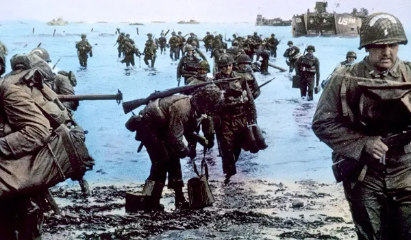

Questionário de História
Será que você consegue acertar todas essas perguntas básicas de história?
Qual o seu
nome
?

1. Quanto tempo duraram as duas Guerras Mundiais
juntas
?
Aproximadamente 7 anos.
Aproximadamente 8 anos.
Aproximadamente 9 anos.
Aproximadamente 10 anos.
Aproximadamente 11 anos.
2. Selecione a denominação que se dá pela descrição (type submit)
" ... é um tipo de sistema agrícola baseado em uma monocultura de exportação mediante a utilização de latifúndios e mão de obra escrava."
?
Resposta...
Sistematização
Colonização
Platation
Agrossistema
Mono-agricultura
3. Selecione os nomes de antigos presidentes brasileiros:
Floriano Peixoto
Fernando de Melo Viana
Estácio Coimbra
João Goulart
Júlio Prestes
Washington Luís
Rosa e Silva
José Sarney
José Franco
4. Aonde ocorrerram as batalhas mais sangrentas do exército
brasileiro
?
Segunda Guerra mundial.
Guerra do Uruguai.
Guerra do Paraguai.
Guerra de Canudos.
Guerra de Independência do Brasil.
5. Selecione a
data
da revolução Russa:
Selecione: